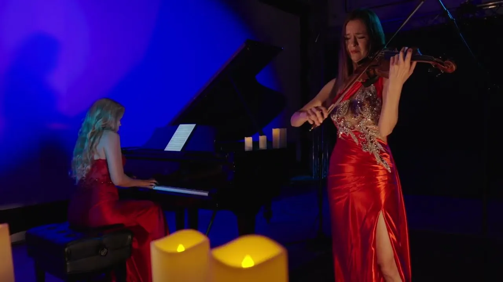
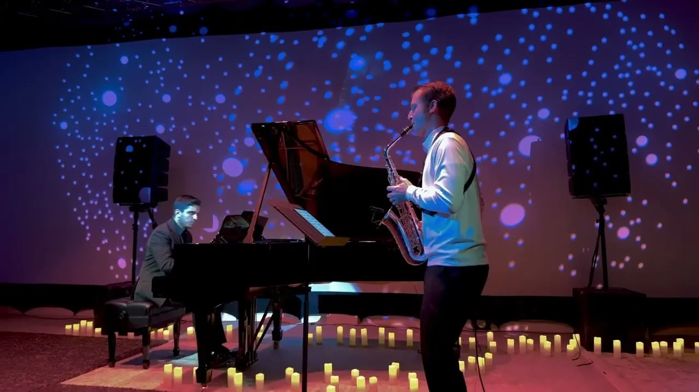

Work / Triton Studios
Commercial client · 2025—
A room built for chamber and classical performance, and an ongoing brief to make what happens inside it travel.
The brief
Triton Studios is a performance and recording room in Hollywood, Florida. Classical and chamber players come through — violin, piano, alto sax — and the work is to capture a live performance so it still reads as live once it's on a screen.
That means multi-camera coverage that respects the music, audio that survives the edit, and a turnaround fast enough that the players and the room can actually use it. It's an ongoing engagement rather than a one-off shoot: a repeatable capture package that gets a little tighter every session.
Selected captures

John Williams — Theme from Schindler's List

Pequeña Czarda — Piano & Alto Sax
Skoryk — Carpathian Rhapsody
Live capture · Triton Studios · Hollywood, FL